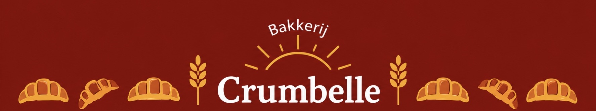
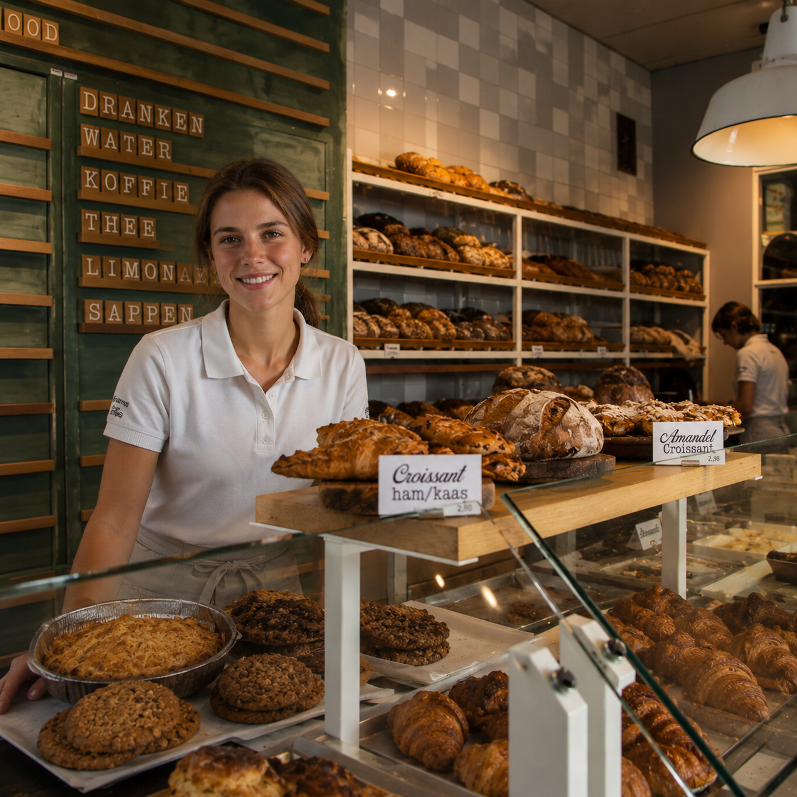
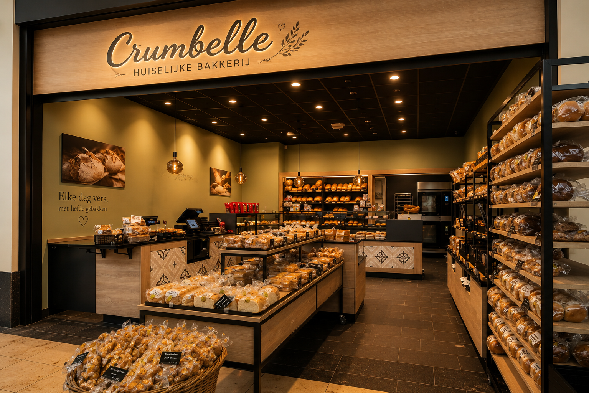

Sinds 1995
Met elkaar en voor elkaar!
Een droom werkelijkheid zien worden is voor iedere ondernemer een magisch moment. Wat begon als een passie voor bakken, groeide uit tot Bakkerij Crumbelle. Met liefde voor ambacht en oog voor kwaliteit werken ik en mijn man iedere dag aan vers brood, heerlijke croissants en andere lekkernijen voor onze klanten.
Mijn persoonlijke passie voor bakken ontstond al jaren geleden. Door veel te oefenen, nieuwe recepten uit te proberen en inspiratie op te doen, groeide ik niet alleen kennis maar ook ambitie. Wat begon als een hobby werd uiteindelijk een eigen bakkerij waar kwaliteit, gezelligheid en vakmanschap centraal staan.
Elke ochtend beginnen wij vroeg met het bereiden van deeg, het bakken van brood en het maken van verse producten. Daarbij gebruiken wij zorgvuldig geselecteerde ingrediënten en besteden wij veel aandacht aan elk product dat onze oven verlaat. Voor ons draait bakken niet alleen om smaak, maar ook om het creëren van een warm en vertrouwd gevoel.
Inmiddels is Bakkerij Crumbelle uitgegroeid tot een plek waar klanten terecht kunnen voor ambachtelijke producten en persoonlijke service. Wij blijven samen ons assortiment vernieuwen en luisteren graag naar de wensen van onze klanten, zodat er voor iedereen iets lekkers te vinden is.
Ons doel is om een bakkerij te zijn waar kwaliteit, vakmanschap en gastvrijheid samenkomen. Een plek waar mensen graag binnenlopen en met een glimlach weer naar buiten gaan.
Wij heten u hartlijke welkom bij Bakkerij Crumbelle!
Hartelijke groeten,
Team Crumbelle

